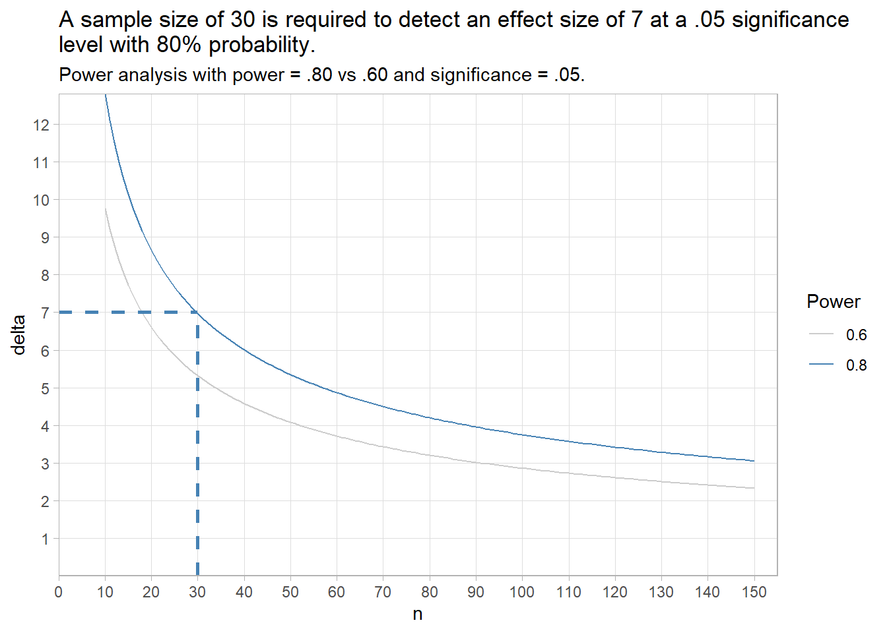
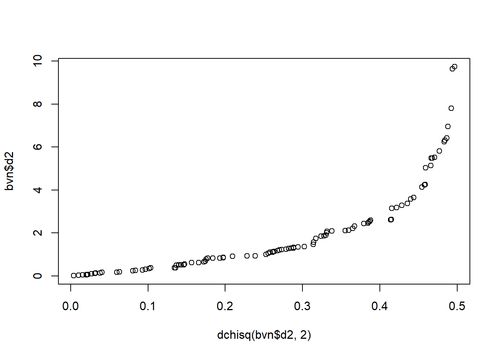
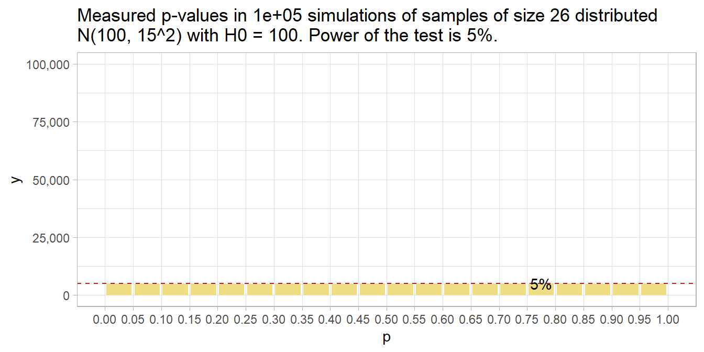

Chapter 1 One-Group Inference Tests
One-group refers to a single population whose metric you are trying to measure. In the case of a quantitative metric, you are typically measuring its mean value. In the case of a count variable, you are typically measuring its proportion.
1.1 One-Group Inference with Numeric Variable
The tests in this section use the sample mean, \(\bar{x}\), as an estimate of the population mean, \(\mu\). The tests apply when the data is independent. Using the normal or student-t distribution, you can create a confidence interval around the estimate, or evaluate an hypothesized population mean, \(\mu_0\). Which test you use depends on what you know about the population distribution (normal vs non-normal) and its variance (known or unknown):
| Normal Distribution | Non-Normal | |
|---|---|---|
| Known Variance | z-test | Wilcoxon Median |
| Unknown Variance | t-test | Wilcoxon Median |
1.1.1 One Sample z Test for Numeric Var
The z test is also called the normal approximation z test. It only applies when the sampling distribution of the population mean is normally distributed with known variance, and there are no significant outliers. The sampling distribution is normally distributed when the underlying population is normally distributed, or when the sample size is large \((n >= 30)\), as follows from the central limit theorem. The t test returns similar results, plus it is valid when the variance is unknown, and that is pretty much always. For that reason, you probably will never use this test.
Under the normal approximation method, the measured mean \(\bar{x}\) approximates the population mean \(\mu\), and the sampling distribution has a normal distribution centered at \(\mu\) with standard error \(se_\mu = \frac{\sigma}{\sqrt{n}}\) where \(\sigma\) is the standard deviation of the underlying population. Define a \((1 - \alpha)\%\) confidence interval as \(\bar{x} \pm z_{(1 - \alpha) {/} 2} se_\mu\), or test \(H_0: \mu = \mu_0\) with test statistic \(Z = \frac{\bar{x} - \mu_0}{se_\mu}\).
Example
The mtcars data set is a sample of n = 32 cars. The mean fuel economy is \(\bar{x} \pm s\) = 20.1 \(\pm\) 6.0 mpg. The prior measured overall fuel economy for vehicles was \(\mu_0 \pm \sigma\) = 18.0 \(\pm\) 6.0 mpg. Has fuel economy improved?
The sample size is \(\ge\) 30, so the sampling distribution of the population mean is normally distributed. The population variance is known, so use the z test.
\(H_0: \mu = 16.0\), and \(H_a: \mu > 16.0\) - a right-tail test. The test statistic is \(Z = \frac{\bar{x} - \mu_0}{se_\mu}=\) 1.97 where \(se_{\mu_0} = \frac{\mu_0}{\sqrt{n}} =\) 1.06. \(P(z > Z) =\) 0.0244, so reject \(H_0\) at the \(\alpha =\) 0.05 level of significance.

The 95% confidence interval for \(\mu\) is \(\bar{x} \pm z_{(1 - \alpha){/}2} se_\mu\) where \(z_{(1 - \alpha){/}2} =\) 1.96. \(\mu =\) 20.09 \(\pm\) 2.08 (95% CI 18.01 to 22.17).

1.1.2 One sample t Test for Numeric Var
The one-sample t test applies when the sampling distribution of the population mean is normally distributed and there are no significant outliers. Unlike the z test, the population variance can be unknown. The sampling distribution is normally distributed when the underlying population is normally distributed, or when the sample size is large \((n >= 30)\), as follows from the central limit theorem.
Under the t test method, the measured mean, \(\bar{x}\), approximates the population mean, \(\mu\). The sample standard deviation, \(s\), estimates the unknown population standard deviation, \(\sigma\). The resulting sampling distribution has a t distribution centered at \(\mu\) with standard error \(se_\bar{x} = \frac{s}{\sqrt{n}}\). Define a \((1 - \alpha)\%\) confidence interval as \(\bar{x} \pm t_{(1 - \alpha){/}2} se_\bar{x}\) and/or test \(H_0: \mu = \mu_0\) with test statistic \(T = \frac{\bar{x} - \mu_0}{se_\bar{x}}\).
Here is a case study. A researcher recruits a random sample of n = 40 people to participate in a study about depression intervention. The researcher measures the participants’ depression level prior to the study. The mean depression score (3.72 \(\pm\) 0.74) was lower than the population ‘normal’ depression score of 4.0. The null hypothesis is that the sample is representative of the overall population. Should you reject \(H_0\)?
| Characteristic | N = 401 |
|---|---|
| dep_score | 3.72 (0.74) |
|
1
Statistics presented: Mean (SD)
|
|
Conditions
The one-sample t test applies when the variable is continuous and the observations are independent. Additionally, there are two conditions related to the data distribution. If either condition fails, try the suggested work-arounds or use the non-parametric Wilcoxon 1-Sample Median Test for Numeric Var instead.
- Outliers. There should be no significant outliers. Outliers exert a large influence on the mean and standard deviation. Test with a box plot. If there are outliers, you might be able to drop them or transform the data.
- Normality. Values should be nearly normally distributed (“nearly” because the t-test is robust to the normality assumption). This condition is especially important with small sample sizes. Test with Q-Q plots or the Shapiro-Wilk test for normality. If the data is very non-normal, you might be able to transform the data.
Outliers
Assess outliers with a box plot. Box plot whiskers extend up to 1.5*IQR from the upper and lower hinges and outliers (beyond the whiskers) are are plotted individually. The boxplot shows no outliers.

If the outliers might are data entry errors or measurement errors, fix them or discard them. If the outliers are genuine, you have a couple options before reverting to Wilcoxon.
- Transform the variable. Don’t do this unless the variable is also non-normal. Transformation also has the downside of making interpretation more difficult.
- Leave it in if it doesn’t affect the conclusion (compared to taking it out).
Normality
Assume the population is normally distributed if n \(\ge\) 30. Otherwise, asses a Q-Q plot, skewness and kurtosis values, or a histogram. If you still don’t feel confident about normality, run a [Shapiro-Wilk Test].
The data set has n = 40 observations, so you can assume normality. Here is a QQ plot anyway. The QQ plot indicates normality.
dep %>%
ggplot(aes(sample = dep_score)) +
stat_qq() +
stat_qq_line(col = "goldenrod") +
theme_minimal() +
labs(title = "Normal Q-Q Plot")
Here is the Shapiro-Wilk normality test. It fails to reject the null hypothesis of a normally distributed population.
##
## Shapiro-Wilk normality test
##
## data: dep$dep_score
## W = 0.98446, p-value = 0.8474If the data is not normally distributed, you still have a couple options before reverting to Wilcoxon.
- Transform the dependent variable.
- Carry on regardless - the one-sample t-test is fairly robust to deviations from normality.
Results
Conduct the t-test. To get a 95% CI around the difference (instead of around the estimate), run the test using the difference, \(\mu_0 - \bar{x}\), and leave mu at its default of 0.
##
## One Sample t-test
##
## data: mu_0 - dep$dep_score
## t = 2.3811, df = 39, p-value = 0.02224
## alternative hypothesis: true mean is not equal to 0
## 95 percent confidence interval:
## 0.04176615 0.51323385
## sample estimates:
## mean of x
## 0.2775The difference is statistically different from 0 at the p = .05 level. The effect size, called Cohen’s d, is defined as \(d = |M_D| / s\), where \(|M_D| = \bar{x} - \mu_0\), and \(s\) is the sample standard deviation. \(d <.2\) is considered trivial, \(.2 \le d < .5\) small, and \(.5 \le d < .8\) large.
## Cohen's d
## 0.3764788Cohen’s d is 0.38, a small effect.
Make a habit of constructing a plot, just to make sure your head is on straight.

Now you are ready to report the results.
A one-sample t-test was run to determine whether depression score in recruited subjects was different from normal, as defined as a depression score of 4.0. Depression scores were normally distributed, as assessed by Shapiro-Wilk’s test (p > .05) and there were no outliers in the data, as assessed by inspection of a boxplot. Data are mean \(\pm\) standard deviation, unless otherwise stated. Mean depression score (3.72 \(\pm\) 0.74) was lower than the population “normal” depression score of 4.00, a statistically significant difference of 0.28 (95% CI, 0.04 to 0.51), t(39) = 2.38, p = 0.022, d = 0.38.
Appendix: Deciding Sample Size
Determine the sample size required for a maximum error \(\epsilon\) in the estimate by solving the confidence interval equation, \(\bar{x} \pm t_{(1 - \alpha){/}2} \frac{s}{\sqrt{n}}\) for \(n=\frac{{t_{\alpha/2,n-1}^2se^2}}{{\epsilon^2}}\) . Unfortunately, \(t_{\alpha/2,n-1}^2\) is dependent on \(n\), so replace it with \(z_{\alpha/2}^2\). What about \(s^2\)? Estimate it from the literature, a pilot study, or using the empirical rule that 95% of the range falls within two standard deviations, \(s=range / 4\).
For example, if the maximum tolerable error is* \(\epsilon\) = 3, and \(s\) is approximately 10, what sample size produces an \(\alpha\) =0.05 confidence level?
## [1] 431.1.3 Wilcoxon 1-Sample Median Test for Numeric Var
The Wilcoxon one-sample median test (aka Wilcoxon signed rank test) is a non-parametric alternative to the t-test for cases when the the sampling distribution of the population mean is not normally distributed, but is at least symmetric.
Under the Wilcoxon test, the measured median, \(\eta_x\), approximates the population median, \(\eta\). The method calculates the difference between each value and the hypothesized median, \(\eta_0\), ranks the difference magnitudes, then sums the ranks for the negative and the positive differences, \(W+\) and \(W-\). The test compares the smaller of the two sums to a table of critical values.
Here is a case study. A store claims their checkout wait times are \(\le\) 4 minutes. You challenge the claim by sampling 6 checkout experiences. The mean wait time was 4.6, but the data may violate normality.
data.frame(wait = wait) %>%
ggplot(aes(sample = wait)) +
stat_qq() +
stat_qq_line(col = "goldenrod") +
theme_minimal() +
labs(title = "Normal Q-Q Plot")
Shapiro-Wilk rejects the null hypothesis of a normally distributed population.
##
## Shapiro-Wilk normality test
##
## data: wait
## W = 0.75105, p-value = 0.0204Use the Wilcoxon test instead.
## Warning in wilcox.test.default(wait, mu = 4, alternative = "greater"): cannot
## compute exact p-value with ties##
## Wilcoxon signed rank test with continuity correction
##
## data: wait
## V = 14.5, p-value = 0.2309
## alternative hypothesis: true location is greater than 4A Wilcoxon Signed-Ranks Test indicated that wait times were not statistically significantly higher than the 4-minute claim, z = 14.5, p = 0.231.
1.2 One-Group Inference with Categorical Variable
1.2.1 1 Sample z Test for Categorical Var
This test applies when you know the population variance.
1.2.2 1 sample t Test for Categorical Var
This test applies when you do not know the population variance.
1.2.3 Wilcoxon 1-Sample Median Test for Categorical Var
This test applies when the variable is not normally distributed.